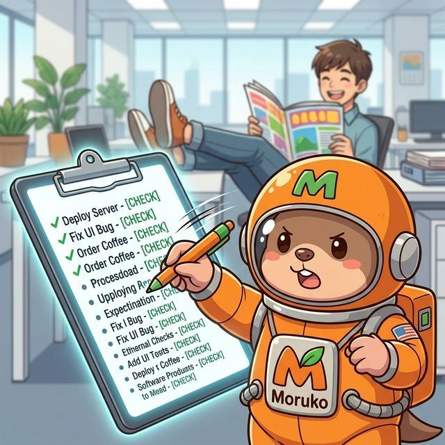
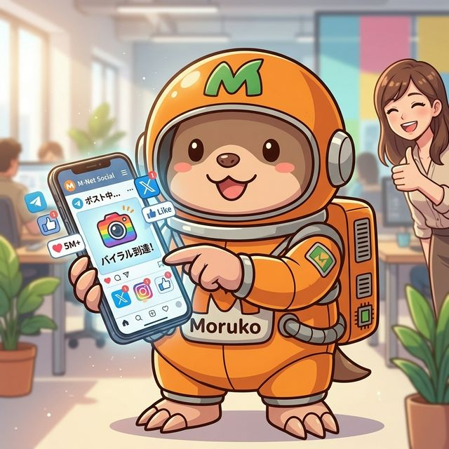

01
制作する
知人の焼肉屋のHP、民泊の予約サイト、占術エンジン。
相談がそのまま“作業”に変わる。
- Webサイト制作
- 予約導線づくり
- 投稿のたたき台
morukoは、機能の羅列よりも「どんな場面で助かるか」が伝わると強い。
知人の焼肉屋のHP、民泊の予約サイト、占術エンジン。
相談がそのまま“作業”に変わる。
迷惑メール整理、画像生成、投稿の下書き。
「毎回手でやる」をルール化して減らす。
ダイエット記録、会った人の情報、その日の出来事。
あとから探せる形で蓄積していく。
スプレッドシート、台帳、タスクリスト。
Telegramのメッセージでそのまま更新できる。
morukoは“制作”だけじゃない。毎日の面倒を片づける実務寄りの相棒でもある。
未読の確認、重要メールの抽出、返信の下書きまで。
カレンダーを見ながら、予定の空きを整理する。

思いついたことをその場でメモして、優先順に並べる。
毎朝の案内と、夜の振り返りを自動で残す。
必要なファイルを探して、整理して、置き場所を整える。

投稿文、画像、ショート動画のたたき台まで一気通貫。
実際のユーザーの使い方を、短い事例として見せる。
知人の店舗サイトを、会話ベースで形にして納品。
体重・食事・気づきを、後で見返せるメモに変換。
人との会話メモを残して、あとから関係性を追えるようにする。
使い始めるまでの流れを短く見せると、導入のハードルが下がる。
まずは「こうしたい」をそのまま送る。
必要な作業、記録、更新に分解して進める。
日々の雑務や制作フローに、自然に組み込める。
難しい初期設定ではなく、会話から始められるのがmorukoの強み。
機材の受け渡しよりも、使い始めまでの安心感を見せる。
PC設定・インストール・初期チューニングは済ませておく。
Telegramの使い方から、相談の仕方まで一緒に確認する。
自宅のPCで動くので、情報管理の納得感を持ちやすい。